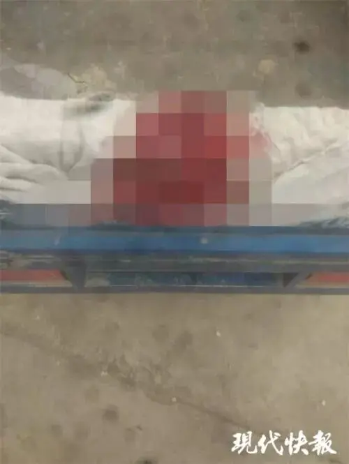
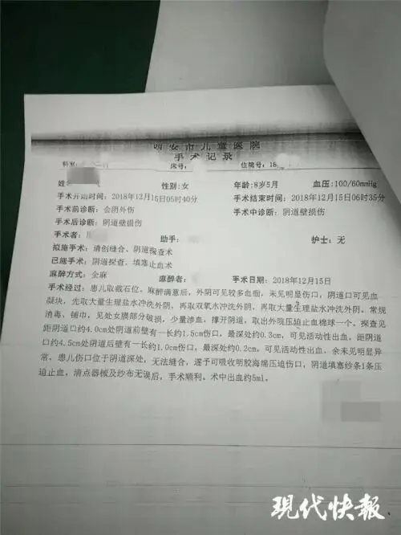

看到这个新闻，我的头皮是发麻的，上一代人冷漠、麻木的债却让无辜的小孩付上了代价！
2018年12月14日，甘肃宁县八岁的小学生小凤（化名）坐在放学回家的路上，看上去很难受。
邻居大妈看到小凤后，发现小凤裤子前后都是血，还有血顺着腿往鞋子里流，于是大妈赶紧用自行车将小凤送回了家。
回家后，看见小女孩一身血，书包里装着一大堆擦过血的卫生纸，秋裤变成血裤，身体还在不停流血，这吓坏了小凤年迈的爷爷和奶奶。
当晚，家属将小凤送往宁县和盛医院，医院见状不敢接收，后又连夜转往西安市儿童医院进行治疗。
而在这去医院的十多个小时里，小姑娘一直在流血。

12月15日，西安市儿童医院对小凤进行了手术治疗，手术记录让每个人的心都在滴血：
“处女膜部分破损;据阴道口约4.5cm处阴道后壁有一长约1.0cm伤口，最深处约0.2cm;患儿伤口位于阴道深处，无法缝合”的字样。赵女士说，医生告诉她，无法确定女孩是否以后还有生育能力。”

8岁的小女孩究竟遭遇了怎样的恶魔行径！
事后，学校回应到：
经查，2018年12月14日下午2时左右，宁县和盛镇杨庄小学一年级学生马某某(男，7周岁)、赵某某(男，6周岁)，怀疑同班同学小凤(女，8周岁)偷拿了马某某的一块橡皮，并借赵某某(男)的一元钱未还，二人对小凤 进行推搡殴打，致其倒地后二人又将其裤子脱掉，用教室里的笤帚把对小凤的下体进行乱打乱戳，致其下体受伤。
15日，公安部门做出这样的处分：
涉事马某某、赵某某因年龄未满14周岁，不予处罚，责令马某某、赵某某监护人严加管教，并依法承担民事责任。
该事件暴露出宁县在学校管理和未成年学生思想道德教育方面存在薄弱环节，县委、县政府责成教育主管部门在全县中小学深入开展学校管理和学生思想道德建设排查整治，坚决消除各类隐患。
决定免去宁县和盛镇杨庄小学杨德荣校长职务，给予警告处分;免去宁县和盛镇杨庄小学副校长李吉红副校长职务，给予记过处分;对宁县和盛学区主任段志伟告诫约谈，并责令向县教育体育局作出深刻书面检查。
而家属的回应却和学校相差十万八千里，一个家属向记者透露，当天小凤曾告诉她自己身上的伤是老师和同学一起打的。
当日，肖姓老师（化名）曾怀疑小凤偷了自己的口红，下午一点左右，小凤的奶奶被叫往学校被肖姓老师要求赔钱，可奶奶并没有带那么多钱，于是没有赔。
后来，小凤就被带往教室，“老师要求同学们把孩子的裤子脱光了打，用教鞭伸进孩子的下体打，一个班一共7个娃娃，5个娃娃都打了。”
这位家长还反映，对于小凤的霸凌之前就存在，因为小凤家境不好，所以经常被欺负。
原来，小凤的父亲有智力障碍，母亲生下小凤后便消失不见，家里还收养了一个失明的哥哥（11岁），一家生活全靠年迈的爷爷、奶奶支撑。
正是这样弱势的家庭让暴行有恃无恐。
一位网友看到评论后，写下这样的评论：
她没有母亲，父亲智力低下，还有个11岁双目失明的哥哥，家里依靠年迈的爷爷奶奶支撑。好可怜的孩子，怎么下得了手，更可耻的是找两个男学生顶罪。
我没有能力也不应该给这件事下结论，我自己小时候很调皮，但让我相信两个七八岁的小男孩会做出这样的事情还是存在很大困难的。
但不论是哪种真相，这件事绝对是丧心病狂的。
如果真的全是孩子所为，那孩童之恶远超我们的想象，《未成年人保护法》就是一部纵容罪恶的法律，甚至会沦为一些人逃脱罪恶的“法宝”，张扣扣案王家就（可能）将罪责甩给了当时未成年的老三，从而避免了重刑。
因此，如果这样的法律做不到“惩治罪恶”，就必须要尽快修订。
如果单是老师所为，有这样的老师存在于我们的教育中，小孩的未来在哪里？ 不要说成为人才，就是让孩子成为一个正常人都很难，这位老师必须要接受法律的审判。
如果是老师教唆其他孩子一起完成暴行，这件事的性质更加恶劣，所有涉事人员必须要接受应有的惩罚。
如果家属所说为实，那么官方就是进行了错误性、误导性甚至包庇性的处罚，这样的罪恶会寒了所有人的心和希望。
因此，受害者家属和全社会迫切需要100%的真相，而不是惨了水的真相，希望相关部门怀着对生命的尊重、对公义的敬畏还小女孩一个公道。
对于这件事，牵涉家庭、教育、法律、道德方方面面，我不想讲大道理，只想提醒大家，我们先不要指望教育体制的改革，也不要指望法律上的革新，当务之急，要回归常识来保护我们的孩子。
让我们看一下我们的小学生守则：
1 热爱祖国，热爱人民，热爱中国共产党。
2 遵守法律法规，增强法律意识；遵守校规校纪，遵守社会公德。
3 热爱科学，努力学习，勤思好问，乐于探究，积极参加社会实践和有益的活动。
4 珍爱生命注意安全，锻炼身体讲究卫生。
5 自尊自爱自信自强，生活习惯文明健康。
6 积极参加劳动，勤俭朴素，自己能做的事自己做。
7 孝敬父母，尊敬师长，礼貌待人。
8 热爱集体团结同学，互相帮助关心他人。
9 诚实守信言行一致，知错就改有责任心。
10 热爱大自然，爱护自然环境。
我们再来对比一下英国的小学生守则：
1 平安成长比成功更重要。
2 背心、裤衩覆盖的地方不许别人摸。
3 生命第一，财产第二。
4 小秘密要告诉妈妈。
5 不喝陌生人的饮料，不吃陌生人的糖果。
6 不与陌生人说话。
7 遇到危险可以打破玻璃，破坏家具。
8 遇到危险可以自己先跑。
9 不保守坏人的秘密。
10 坏人可以骗。
再来看一下日本小学生守则：
1 不迟到；进校后不随便外出。
2 听到集合信号时，迅速在指定场所列队；进教室开门窗要轻；在走廊和楼梯上保持安静，靠右行。
3 上课铃一响即坐好，静等老师来；听课时姿势端正，不讲闲话，勤奋学习。
4 遇迟到、早退、因故未到等情况，必须向老师申明理由，有事先请假。
5 严格遵守规定的放学时间，延长留校时间要经老师许可。
6 上学放学时走规定的路线，靠右行，不要绕道和买零食。
7 遇地震、火灾等紧急情况时不惊慌，按老师指示迅速行动。
可以看到，英国和日本的守则都是一些很具体、实际的动作或者规范，可以有效地帮助孩子建立安全意识，在必要情况下可以采用一些很实用的安全手段，守则还具体规范了小学生的基本行为。
反观我们的守则却充满了“爱国、爱党、孝敬父母、诚实守信”这样的抽象之词。
我们都知道，学习的过程往往都是从具体到抽象的过程，可我们却反其道而行，在孩子对很多行为、场景还没有认知的时候，我们却用这些空洞的概念把孩子弄成了一个个眼高手低、动不动就是一堆大话的孩子。
然而对于哪些行为是礼貌，哪些行为是尊重老师都分不清楚，甚至连最基本的安全意识都无法建立。
也就是说，我们的课堂上多是抽象概念和分数，却鲜有常识和人性。
如果有了基本的常识，小凤怎么会受到侵害却不奋起反抗或者拔腿而跑，而其他学生又怎么会如此轻易被教唆施暴。
我指出来的常识只是很简单的一点，我们的教育在性教育、公民意识、安全卫生等方面都缺乏基本常识，这些都比分数重要百倍，可却得不到家庭和学校的重视。
这使得我们培养出来的学生个个都是缺乏行动力的“大师”，心比天高、一句又一句的大话，但却没有内涵和逻辑，两个人在一起聊天都是抽象对抽象，基本的交流都成障碍。
我自己也是深受其害，饭不会做，衣不会洗，去医院挂号看病的流程都把我绕的头晕晕的，面对毫无生活能力的自己有时候真是哭笑不得。
课堂上不仅迫切需要常识，家庭中更是如此。
很多人觉得把孩子丢在老家，为孩子背井离乡外出打工很伟大，其实这很傻，如果爱你的孩子就应该陪伴她，就应该留在身边守护她，只不过少赚点钱，重要的是一家人在一起。
否则，孩子变成留守儿童，长期分居夫妻之间早已同床异梦，到最后，孩子不像孩子，大人不像大人，失去的远比得到的更多。
整个社会也要重视常识，要不然我们又要用自己的血汗钱堆出一个“百亿权健帝国”。
相应的，大国梦我们也不要做了，不要动不动就厉害了，动不动就吓尿了这个，吓尿了那个，这没有一点意义，反而让大家像是吃了迷魂汤一样神魂颠倒、意识不清。
还是要先回归常识，法律道德简简单单地做到惩恶扬善，政府部门简简单单地做到服务于民就可以了。
做不到这些，不要说吓尿别人了，就是让别人正眼看我们一眼都很难，因为我们走火入魔离正常人太远。
愿上帝怜悯我们，愿小女孩早日康复，愿公义和真相早日降临。
这里没有挑逗你眼目情欲的小鲜肉
也没有挑动你肉体情欲的段子
更没有膨胀你今生骄傲的鸡血
我们只在乎那些最质朴真诚的作品
在那里我们才能恢复真正的想象力
我们也坚信这才是我们真正需要的

ID:Six_hundred_hits
长按二维码，一键关注
【六百击】
-END-
电影评论
尽情分享朋友圈

苹果打赏通道
小提示：文末广告是腾讯配送广告，内容与本号无关，但您的每次点击（无需反复点）都会给平台带来几毛收益，欢迎您点击支持六百击。